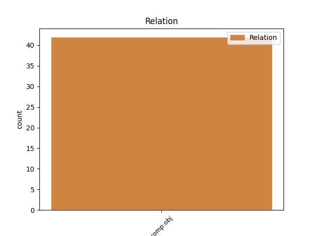
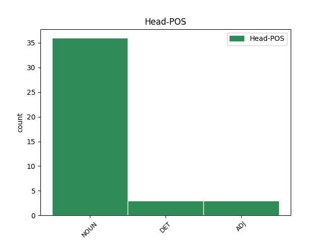
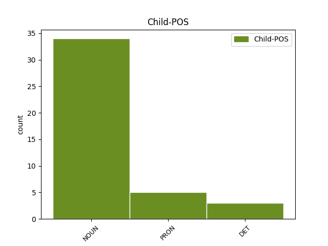

Distribution of features within this leaf



Agreement Rules sorted by frequency.
- When the dependent token is the direct object complements(comp:obj) of the head token, and the head token is NOUN and the dependent token is NOUN.
1 Conform _ _ _ _ 0 _ _ _
2 regulii _ _ _ _ 0 _ _ _
3 empirice _ _ _ _ 0 _ _ _
4 dacă _ _ _ _ 0 _ _ _
5 o _ _ _ _ 0 _ _ _
6 serie _ _ _ _ 0 _ _ _
7 de _ _ _ _ 0 _ _ _
8 repartiție _ _ _ _ 0 _ _ _
9 este _ _ _ _ 0 _ _ _
10 normală _ _ _ _ 0 _ _ _
11 atunci _ _ _ _ 0 _ _ _
12 fracțiunea _ _ _ _ 0 _ _ _
13 de _ _ _ _ 0 _ _ _
14 date _ _ _ _ 0 _ _ _
15 situate _ _ _ _ 0 _ _ _
16 la _ _ _ _ 0 _ _ _
17 cel _ _ _ _ 0 _ _ _
18 mult _ _ _ _ 0 _ _ _
19 o _ _ _ _ 0 _ _ _
20 unitate _ _ _ _ 0 _ _ _
21 de _ _ _ _ 0 _ _ _
22 deviație _ _ _ _ 0 _ _ _
23 standard _ _ _ _ 0 _ _ _
24 s _ _ _ _ 0 _ _ _
25 față _ _ _ _ 0 _ _ _
26 de _ _ _ _ 0 _ _ _
27 medie _ _ _ _ 0 _ _ _
28 este _ _ _ _ 0 _ _ _
29 aproximativ _ _ _ _ 0 _ _ _
30 68% _ _ _ _ 0 _ _ _
31 , _ _ _ _ 0 _ _ _
32 iar _ _ _ _ 0 _ _ _
33 fracțiunea _ _ _ _ 0 _ _ _
34 de _ _ _ _ 0 _ _ _
35 date _ _ _ _ 0 _ _ _
36 situate _ _ _ _ 0 _ _ _
37 la _ _ _ _ 0 _ _ _
38 cel _ _ _ _ 0 _ _ _
39 mult _ _ _ _ 0 _ _ _
40 două _ _ _ _ 0 _ _ _
41 unități _ _ _ _ 0 _ _ _
42 de _ _ _ _ 0 _ _ _
43 deviație _ _ _ _ 0 _ _ _
44 standard _ _ _ _ 0 _ _ _
45 s _ _ _ _ 0 _ _ _
46 față față NOUN Ncfsrn Case=Acc,Nom|Definite=Ind|Gender=Fem|Number=Sing 0 _ _ _
47 de _ _ _ _ 0 _ _ _
48 medie medie NOUN Ncfsrn Case=Acc,Nom|Definite=Ind|Gender=Fem|Number=Sing 46 comp:obj _ _
49 este _ _ _ _ 0 _ _ _
50 aproximativ _ _ _ _ 0 _ _ _
51 95% _ _ _ _ 0 _ _ _
52 . _ _ _ _ 0 _ _ _
1 Relația _ _ _ _ 0 _ _ _
2 s- _ _ _ _ 0 _ _ _
3 a _ _ _ _ 0 _ _ _
4 terminat _ _ _ _ 0 _ _ _
5 după _ _ _ _ 0 _ _ _
6 cinci _ _ _ _ 0 _ _ _
7 ani _ _ _ _ 0 _ _ _
8 : _ _ _ _ 0 _ _ _
9 iubitul _ _ _ _ 0 _ _ _
10 ei _ _ _ _ 0 _ _ _
11 a _ _ _ _ 0 _ _ _
12 devenit _ _ _ _ 0 _ _ _
13 prea _ _ _ _ 0 _ _ _
14 obosit _ _ _ _ 0 _ _ _
15 pentru _ _ _ _ 0 _ _ _
16 a _ _ _ _ 0 _ _ _
17 face _ _ _ _ 0 _ _ _
18 față _ _ _ _ 0 _ _ _
19 grijii _ _ _ _ 0 _ _ _
20 față față NOUN Ncfsrn Case=Acc,Nom|Definite=Ind|Gender=Fem|Number=Sing 0 _ _ _
21 de _ _ _ _ 0 _ _ _
22 ea el PRON Pp3fsr--------s Case=Acc,Nom|Gender=Fem|Number=Sing|Person=3|PronType=Prs|Strength=Strong 20 comp:obj _ SpaceAfter=No
23 . _ _ _ _ 0 _ _ _
1 Vedeau _ _ _ _ 0 _ _ _
2 firma _ _ _ _ 0 _ _ _
3 de _ _ _ _ 0 _ _ _
4 tablă _ _ _ _ 0 _ _ _
5 strălucind _ _ _ _ 0 _ _ _
6 în _ _ _ _ 0 _ _ _
7 soare _ _ _ _ 0 _ _ _
8 și _ _ _ _ 0 _ _ _
9 mesele _ _ _ _ 0 _ _ _
10 scoase _ _ _ _ 0 _ _ _
11 afară _ _ _ _ 0 _ _ _
12 o un DET Tifsr Case=Acc,Nom|Gender=Fem|Number=Sing|PronType=Ind 0 _ _ _
13 dată _ _ _ _ 0 _ _ _
14 cu _ _ _ _ 0 _ _ _
15 îndreptarea îndreptare NOUN Ncfsry Case=Acc,Nom|Definite=Def|Gender=Fem|Number=Sing 12 comp:obj _ _
16 timpului _ _ _ _ 0 _ _ _
17 . _ _ _ _ 0 _ _ _
1 E _ _ _ _ 0 _ _ _
2 în _ _ _ _ 0 _ _ _
3 pregătire _ _ _ _ 0 _ _ _
4 un _ _ _ _ 0 _ _ _
5 nou _ _ _ _ 0 _ _ _
6 brand _ _ _ _ 0 _ _ _
7 , _ _ _ _ 0 _ _ _
8 total _ _ _ _ 0 _ _ _
9 diferit _ _ _ _ 0 _ _ _
10 față față NOUN Ncfsrn Case=Acc,Nom|Definite=Ind|Gender=Fem|Number=Sing 0 _ _ _
11 de _ _ _ _ 0 _ _ _
12 cele cel DET Tdfpr Case=Acc,Nom|Gender=Fem|Number=Plur|PronType=Dem 10 comp:obj _ _
13 dinainte _ _ _ _ 0 _ _ _
14 , _ _ _ _ 0 _ _ _
15 în _ _ _ _ 0 _ _ _
16 care _ _ _ _ 0 _ _ _
17 un _ _ _ _ 0 _ _ _
18 rol _ _ _ _ 0 _ _ _
19 semnificativ _ _ _ _ 0 _ _ _
20 îl _ _ _ _ 0 _ _ _
21 joacă _ _ _ _ 0 _ _ _
22 o _ _ _ _ 0 _ _ _
23 componentă _ _ _ _ 0 _ _ _
24 culturală _ _ _ _ 0 _ _ _
25 apreciabilă _ _ _ _ 0 _ _ _
26 . _ _ _ _ 0 _ _ _
1 Când _ _ _ _ 0 _ _ _
2 este _ _ _ _ 0 _ _ _
3 necesară necesar ADJ Afpfsrn Case=Acc,Nom|Definite=Ind|Degree=Pos|Gender=Fem|Number=Sing 0 _ _ _
4 o _ _ _ _ 0 _ _ _
5 ajustare ajustare NOUN Ncfsrn Case=Acc,Nom|Definite=Ind|Gender=Fem|Number=Sing 3 comp:obj _ _
6 a _ _ _ _ 0 _ _ _
7 dozei _ _ _ _ 0 _ _ _
8 , _ _ _ _ 0 _ _ _
9 aceasta _ _ _ _ 0 _ _ _
10 trebuie _ _ _ _ 0 _ _ _
11 efectuată _ _ _ _ 0 _ _ _
12 în _ _ _ _ 0 _ _ _
13 etape _ _ _ _ 0 _ _ _
14 de _ _ _ _ 0 _ _ _
15 cel _ _ _ _ 0 _ _ _
16 puțin _ _ _ _ 0 _ _ _
17 patru _ _ _ _ 0 _ _ _
18 săptămâni _ _ _ _ 0 _ _ _
19 . _ _ _ _ 0 _ _ _
Disagree Examples:
1 Și _ _ _ _ 0 _ _ _
2 a _ _ _ _ 0 _ _ _
3 făcut _ _ _ _ 0 _ _ _
4 Dumnezeu _ _ _ _ 0 _ _ _
5 tăria _ _ _ _ 0 _ _ _
6 cerului _ _ _ _ 0 _ _ _
7 și _ _ _ _ 0 _ _ _
8 a _ _ _ _ 0 _ _ _
9 despărțit _ _ _ _ 0 _ _ _
10 apele _ _ _ _ 0 _ _ _
11 care _ _ _ _ 0 _ _ _
12 sunt _ _ _ _ 0 _ _ _
13 dedesubtul dedesubt NOUN Ncmsry Case=Acc,Nom|Definite=Def|Gender=Masc|Number=Sing 14 comp:obj _ _
14 tăriei tărie NOUN Ncfsoy Case=Dat,Gen|Definite=Def|Gender=Fem|Number=Sing 0 _ _ _
15 de _ _ _ _ 0 _ _ _
16 apele _ _ _ _ 0 _ _ _
17 care _ _ _ _ 0 _ _ _
18 sunt _ _ _ _ 0 _ _ _
19 deasupra _ _ _ _ 0 _ _ _
20 tăriei _ _ _ _ 0 _ _ _
21 . _ _ _ _ 0 _ _ _
1 Biserica _ _ _ _ 0 _ _ _
2 din _ _ _ _ 0 _ _ _
3 cadrul cadru NOUN Ncmsry Case=Acc,Nom|Definite=Def|Gender=Masc|Number=Sing 4 comp:obj _ _
4 ansamblului ansamblu NOUN Ncmsoy Case=Dat,Gen|Definite=Def|Gender=Masc|Number=Sing 0 _ _ _
5 mănăstiresc _ _ _ _ 0 _ _ _
6 al _ _ _ _ 0 _ _ _
7 Moldovitei _ _ _ _ 0 _ _ _
8 , _ _ _ _ 0 _ _ _
9 cu _ _ _ _ 0 _ _ _
10 fațadele _ _ _ _ 0 _ _ _
11 sale _ _ _ _ 0 _ _ _
12 îmbrăcate _ _ _ _ 0 _ _ _
13 în _ _ _ _ 0 _ _ _
14 întregime _ _ _ _ 0 _ _ _
15 cu _ _ _ _ 0 _ _ _
16 frumosul _ _ _ _ 0 _ _ _
17 și _ _ _ _ 0 _ _ _
18 originalul _ _ _ _ 0 _ _ _
19 lor _ _ _ _ 0 _ _ _
20 veșmânt _ _ _ _ 0 _ _ _
21 de _ _ _ _ 0 _ _ _
22 pictură _ _ _ _ 0 _ _ _
23 , _ _ _ _ 0 _ _ _
24 care _ _ _ _ 0 _ _ _
25 își _ _ _ _ 0 _ _ _
26 păstrează _ _ _ _ 0 _ _ _
27 încă _ _ _ _ 0 _ _ _
28 toată _ _ _ _ 0 _ _ _
29 prospețimea _ _ _ _ 0 _ _ _
30 după _ _ _ _ 0 _ _ _
31 atâtea _ _ _ _ 0 _ _ _
32 veacuri _ _ _ _ 0 _ _ _
33 trecute _ _ _ _ 0 _ _ _
34 peste _ _ _ _ 0 _ _ _
35 el _ _ _ _ 0 _ _ _
36 , _ _ _ _ 0 _ _ _
37 face _ _ _ _ 0 _ _ _
38 parte _ _ _ _ 0 _ _ _
39 din _ _ _ _ 0 _ _ _
40 acel _ _ _ _ 0 _ _ _
41 grup _ _ _ _ 0 _ _ _
42 restrâns _ _ _ _ 0 _ _ _
43 de _ _ _ _ 0 _ _ _
44 monumente _ _ _ _ 0 _ _ _
45 din _ _ _ _ 0 _ _ _
46 nordul _ _ _ _ 0 _ _ _
47 Moldovei _ _ _ _ 0 _ _ _
48 . _ _ _ _ 0 _ _ _
1 Totuși _ _ _ _ 0 _ _ _
2 cred _ _ _ _ 0 _ _ _
3 a _ _ _ _ 0 _ _ _
4 ști _ _ _ _ 0 _ _ _
5 , _ _ _ _ 0 _ _ _
6 această _ _ _ _ 0 _ _ _
7 neîngăduință _ _ _ _ 0 _ _ _
8 față față NOUN Ncfsrn Case=Acc,Nom|Definite=Ind|Gender=Fem|Number=Sing 0 _ _ _
9 de _ _ _ _ 0 _ _ _
10 sine sine PRON Px3--a--------s Case=Acc|Person=3|PronType=Prs|Reflex=Yes|Strength=Strong 8 comp:obj _ _
11 nu _ _ _ _ 0 _ _ _
12 se _ _ _ _ 0 _ _ _
13 datorește _ _ _ _ 0 _ _ _
14 unui _ _ _ _ 0 _ _ _
15 spirit _ _ _ _ 0 _ _ _
16 abstract _ _ _ _ 0 _ _ _
17 și _ _ _ _ 0 _ _ _
18 îndepărtat _ _ _ _ 0 _ _ _
19 . _ _ _ _ 0 _ _ _